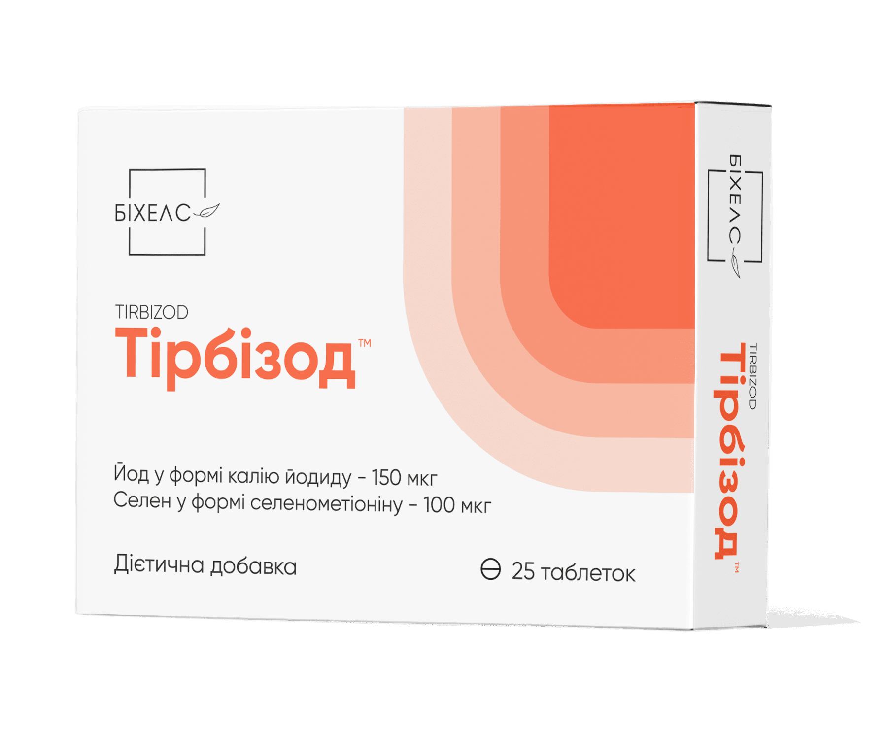
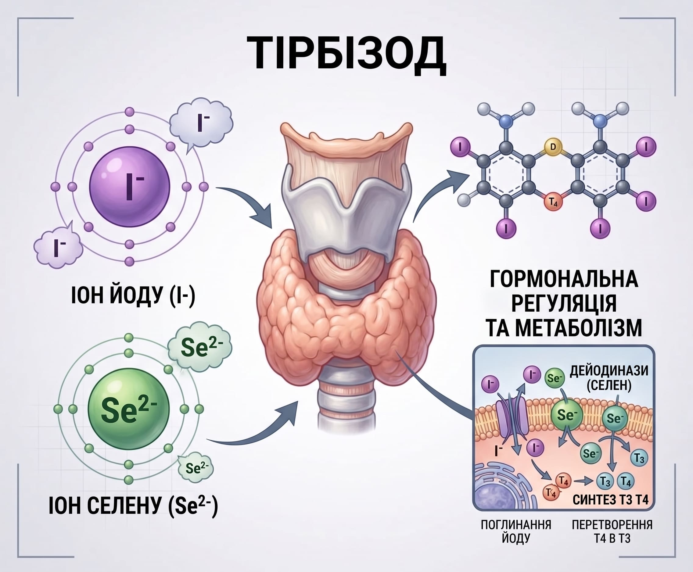

Тірбізод
Тірбізод - оптимальний баланс йоду та селену з найкращою біодоступністю для щоденної підтримки функції щитоподібної залози та захисту від окислювального стресу.

Тірбізод (таблетки №25 та №60)
Спеціалізований комплекс йодиду калію та селену для підтримки функції щитоподібної залози
Збалансований засіб для забезпечення організму оптимальною кількістю йоду та селену. Сприяє нормалізації синтезу тиреоїдних гормонів, профілактиці йододефіцитних станів та захисту клітин щитоподібної залози від оксидативного стресу.

Склад та активні речовини
1 капсула містить:
- Калію йodид - 150 мкг;
- Селенметіонін - 100 мкг;
- Допоміжні речовини: наповнювачі: целюлоза мікрокристалічна, мальтодекстрин; антизлежувальні агенти: стеарат кальцію, діоксид кремнію; оболонка капсули: желатин, барвник оксид цинку.
Властивості компонентів
- Калію йoдид: є джерелом необхідного для щитоподібної залози йoду, який бере участь в утворенні тиреоїдних гормонів (тироксину та трийoдтироніну), запобігає розвитку ендемічного зобу та йodeфіцитних станів.
- Селенметіонін: є незамінним мікроелементом, що входить до складу ферментів (дейфиназ), які забезпечують перетворення неактивного гормону Т4 на активний Т3, а також захищає тканини залози від токсичної дії вільних радикалів.
Рекомендації до застосування
- Профілактика йoдодефіцитних станів та ендемічного зобу в регіонах із дефіцитом йoду;
- Комплексна підтримка функціонального стану щитоподібної залози;
- Збалансування обмінних процесів та покращення загального тонусу організму.
Спосіб застосування та дози
Вживати дорослим по 1 капсулі на добу під час прийому їжі, запиваючи достатньою кількістю питної води. Рекомендований термін споживання та можливість повторного курсу узгоджуються з лікарем.
Протипоказання
Підвищена індивідуальна чутливість до компонентів препарату, стани, за яких протипоказані препарати йоду, вагітність та період лактації (за призначенням лікаря), дитячий вік.